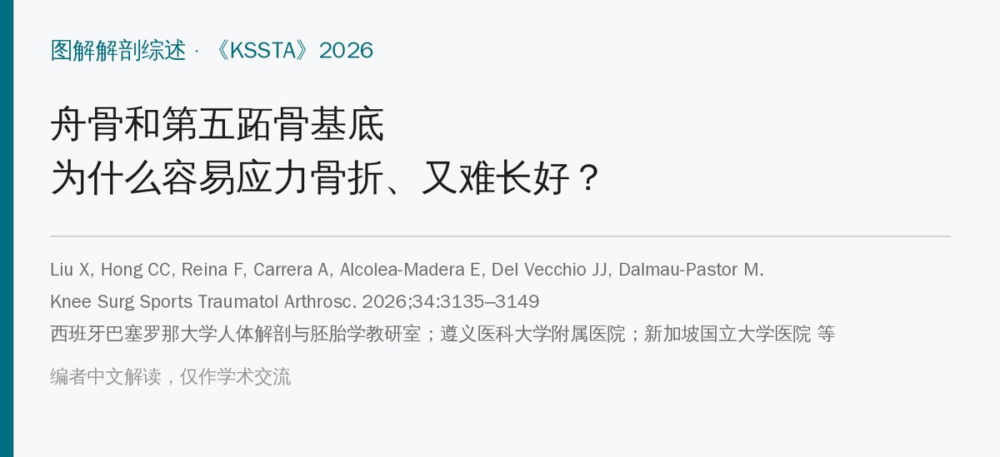
🔖原文信息（编者中文重排）
📚 文献信息
▪ Liu X, Hong CC, Reina F, Carrera A, Alcolea-Madera E, Del Vecchio JJ, Dalmau-Pastor M. Navicular and fifth metatarsal base stress fractures: An illustrated anatomical review. Knee Surg Sports Traumatol Arthrosc. 2026;34:3135–3149. doi:10.1002/ksa.70413
▪ 作者单位：西班牙巴塞罗那大学人体解剖与胚胎学教研室；遵义医科大学附属医院骨科；新加坡国立大学医院骨科；西班牙赫罗纳大学 等
▪ 文章类型：图解解剖综述（以尸体标本照片为主，没有新的临床数据）；CC BY 开放获取
• 舟骨和第五跖骨近端分别是足内侧柱和外侧柱的关键骨，两处都是应力骨折高发、又容易延迟愈合、不愈合、再骨折的部位
• 共同原因是两条：局部血供差 + 受力复杂。舟骨的薄弱点在中 1/3，第五跖骨的薄弱点在干骺端-骨干交界（Jones 区）和近端骨干
• 舟骨要同时扛纵向压力、横向拉力和侧向剪力，而松质骨抗拉能力只有抗压的约 70%；中 1/3 正对查体的“N 点”
• 第五跖骨近端受扭转、弯曲和肌腱牵拉；加速动作时弯矩最大。基底横行骨折主要是跖腱膜外侧束拉出来的，而不是腓骨短肌
• 周围软组织（弹簧韧带、胫后肌腱；腓骨短肌、跖腱膜外侧束、第三腓骨肌）既维持足弓，也是骨折的“拉力源”
舟骨位于足内侧纵弓的顶部，和跟骰关节一起构成跗横关节（Chopart 关节），是连接后足和前足的“桥”，负责传递负荷、支撑体重。名字来自拉丁语 navis（船），因为它形似小船。
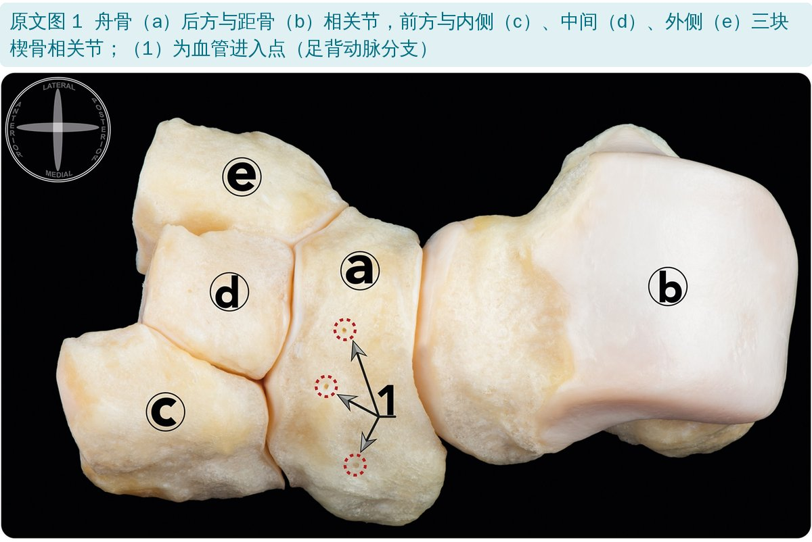
🔖原文图 1 舟骨（a）后方与距骨（b）相关节，前方与内侧（c）、中间（d）、外侧（e）三块楔骨相关节；（1）为足背动脉分支的血管进入点
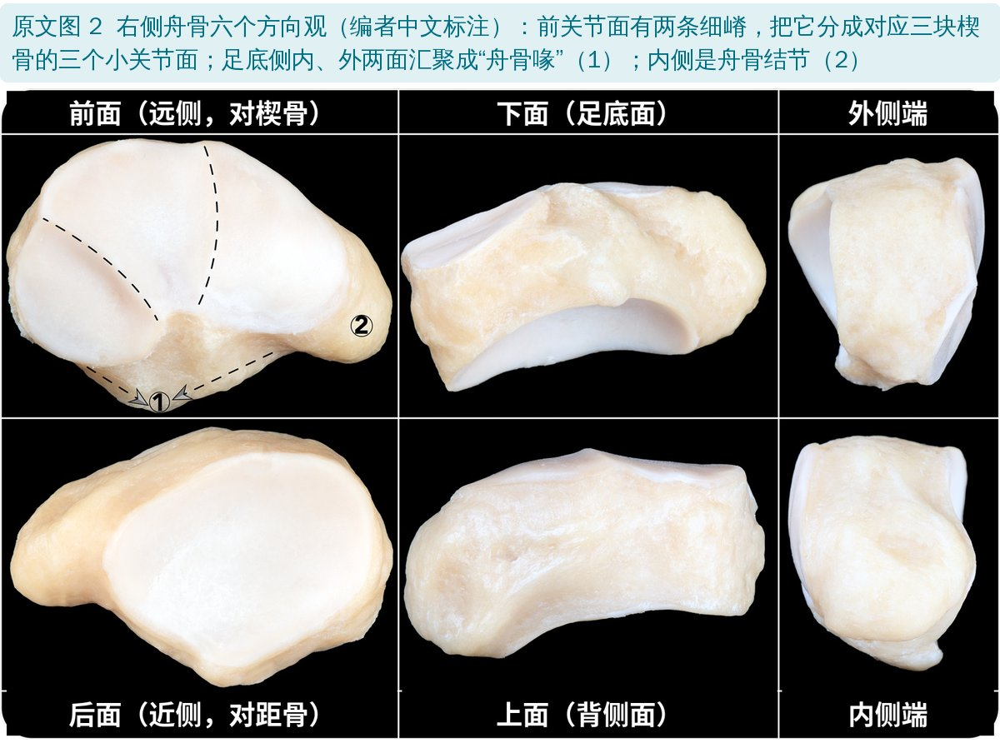
🔖原文图 2 右侧舟骨六个方向观（编者中文标注）：前关节面两条细嵴分出对应三块楔骨的小关节面；足底侧汇聚成“舟骨喙”（1）；内侧是舟骨结节（2）
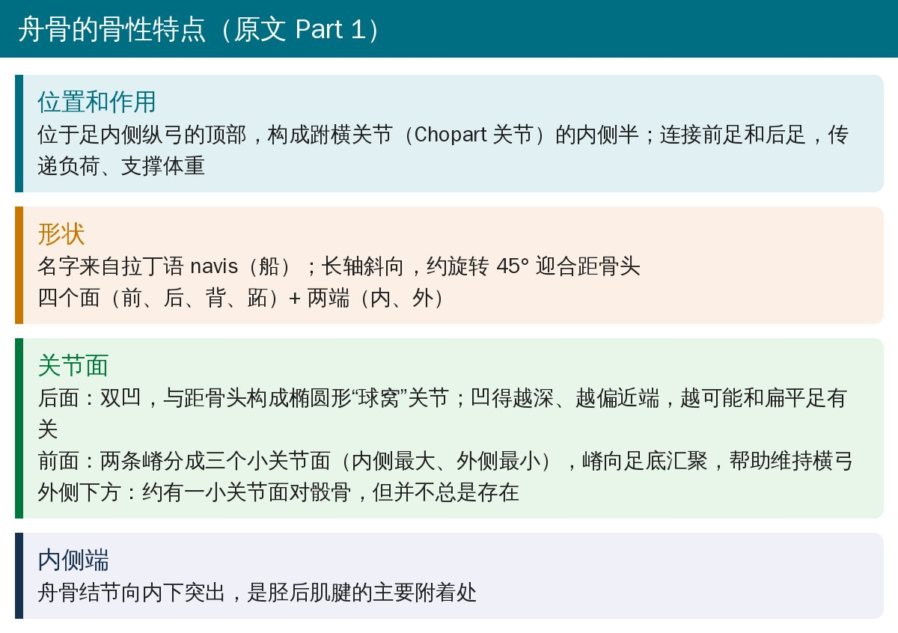
🔖舟骨骨性特点（据原文整理）
值得注意的是后关节面：它和距骨头构成椭圆形球窝关节，但并不完全包住距骨头。如果关节面凹得更深、杯更高、朝向更偏近端，关节匹配度下降，临床上可能和扁平足、内侧纵弓塌陷、前足外展有关。
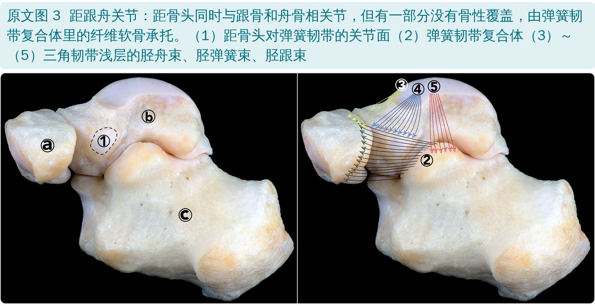
🔖原文图 3 距跟舟关节：距骨头没有骨性覆盖的部分由弹簧韧带复合体中的纤维软骨承托。（1）距骨头对弹簧韧带的关节面（2）弹簧韧带复合体（3）～（5）三角韧带浅层的胫舟束、胫弹簧束、胫跟束
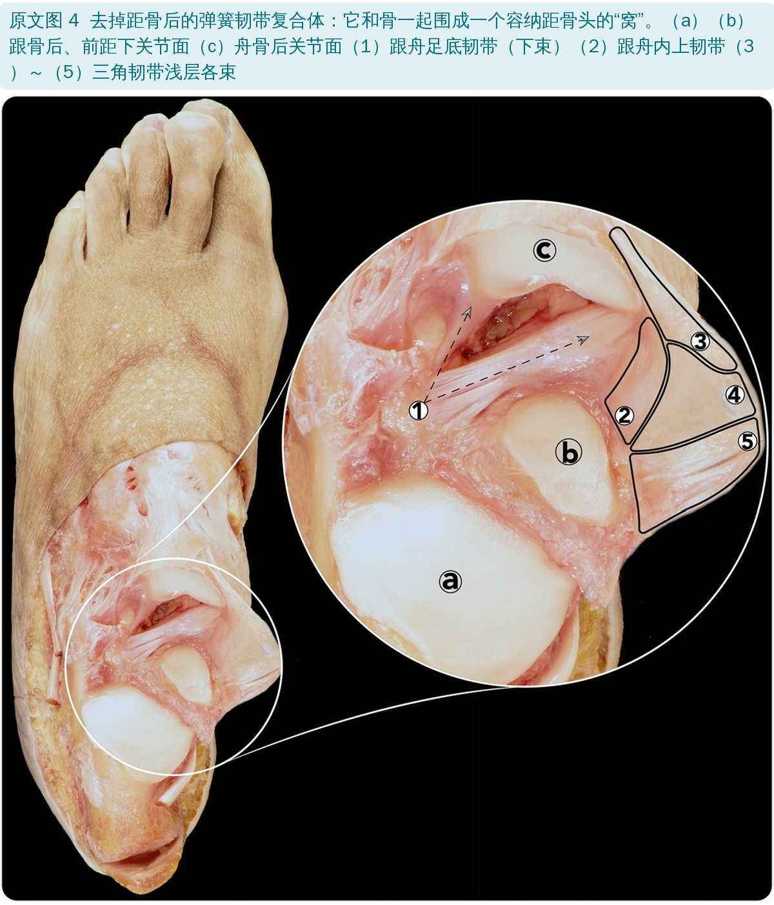
🔖原文图 4 去掉距骨后，弹簧韧带复合体和骨一起围成容纳距骨头的“窝”。（1）跟舟足底韧带（下束）（2）跟舟内上韧带（3）～（5）三角韧带浅层各束
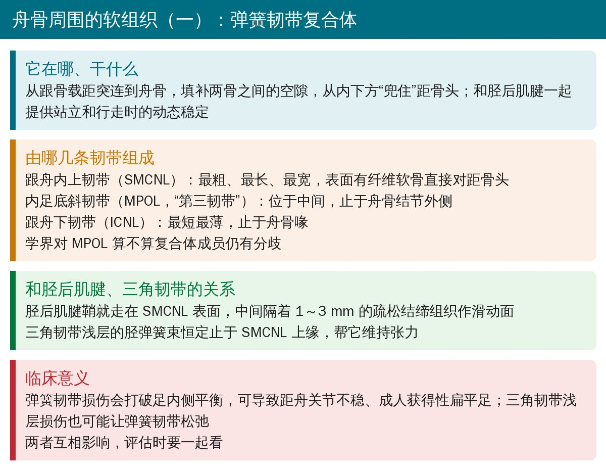
🔖弹簧韧带复合体（据原文整理）
弹簧韧带复合体从内下方“兜住”距骨头，和胫后肌腱一起提供站立、行走时的动态稳定。作者特别强调它和三角韧带浅层的联动：胫弹簧束恒定止于跟舟内上韧带上缘，三角韧带浅层受伤可能让弹簧韧带变松；反过来，弹簧韧带损伤又会加重三角韧带负荷。两者要一起评估，避免漏诊。
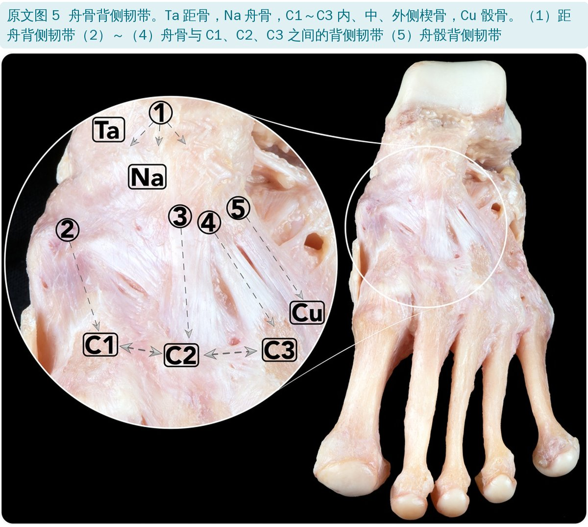
🔖原文图 5 舟骨背侧韧带：（1）距舟背侧韧带（2）～（4）舟骨与内、中、外侧楔骨之间的背侧韧带（5）舟骰背侧韧带
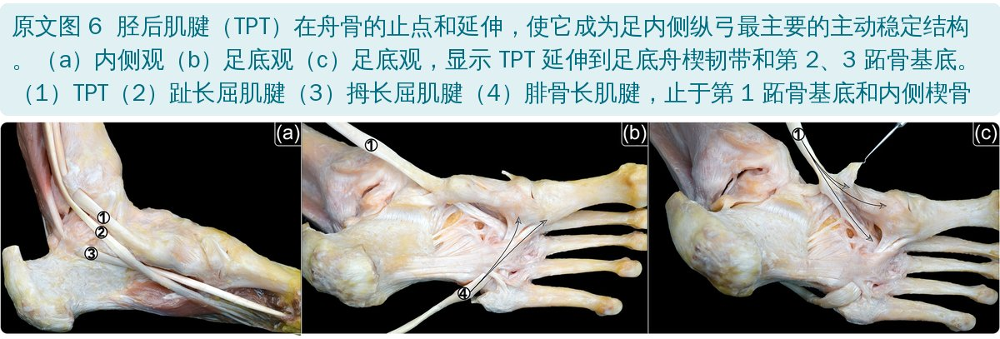
🔖原文图 6 胫后肌腱（TPT）在舟骨的止点和延伸。（a）内侧观（b）（c）足底观，TPT 延伸到足底舟楔韧带和第 2、3 跖骨基底；（2）趾长屈肌腱（3）拇长屈肌腱（4）腓骨长肌腱
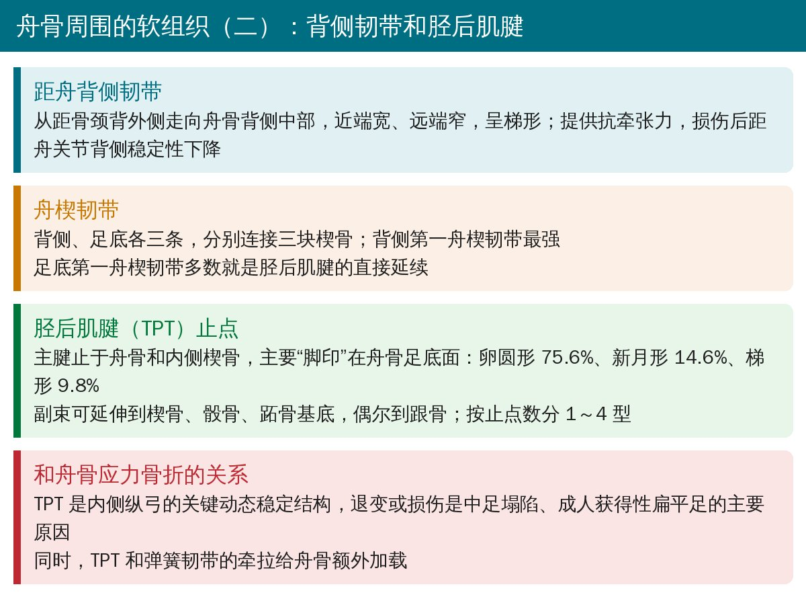
🔖背侧韧带与胫后肌腱（据原文整理）
作者认为舟骨应力骨折是内因 + 外因共同作用的结果。从解剖角度看，主要是两点：
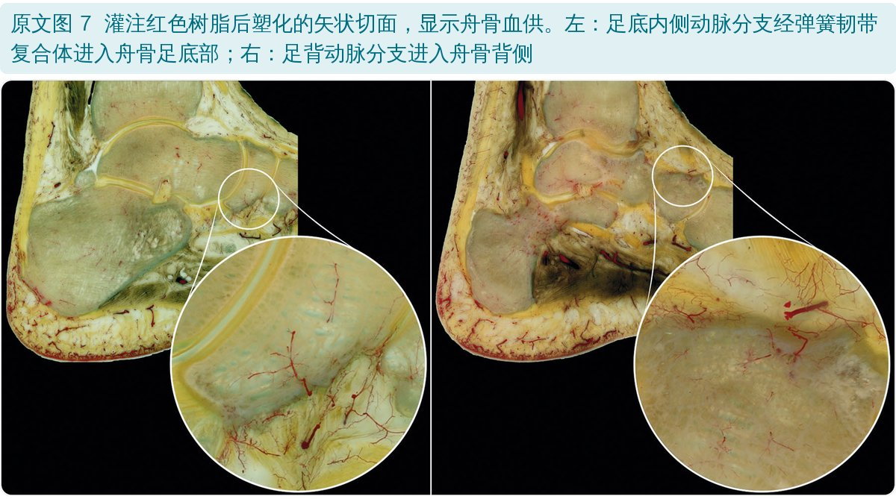
🔖原文图 7 灌注红色树脂后塑化的矢状切面。左：足底内侧动脉分支经弹簧韧带复合体进入舟骨足底部；右：足背动脉分支进入舟骨背侧
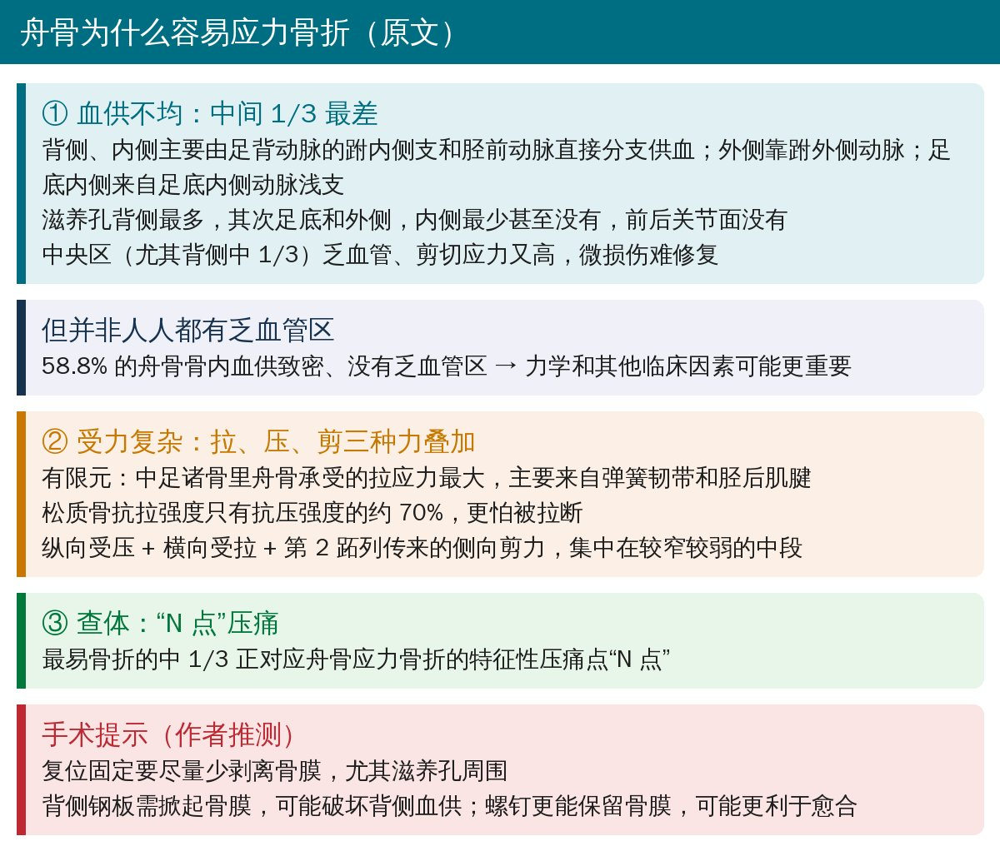
🔖舟骨应力骨折的解剖原因（据原文整理）
• 血供不均：滋养孔集中在背侧，内侧最少，前后关节面没有；中央区（尤其背侧中 1/3）乏血管，微损伤积累后修复不过来。不过也有研究发现 58.8% 的舟骨骨内血供致密、没有乏血管区，说明力学因素可能更重要
• 受力复杂：中足诸骨中舟骨的拉应力最大（主要来自弹簧韧带和胫后肌腱的牵拉），同时纵向受压、还要承受第 2 跖列传来的侧向剪力；三种力集中在较窄较弱的中 1/3
• 查体对应：这个位置正好是舟骨应力骨折的特征性压痛点“N 点”
作者还从血供角度提出一个推测：背侧钢板需要掀起骨膜，可能破坏背侧血供；螺钉对骨膜破坏更小，可能更利于愈合。这只是基于解剖的假设，没有临床数据。
第五跖骨近端应力骨折是下肢最常见的过用损伤之一，多见于跑步、篮球、足球等高冲击运动。起病隐匿，常只是足外侧说不清的不适，容易误诊、延误；一旦延误，延迟愈合、不愈合、再骨折的发生率都很高。
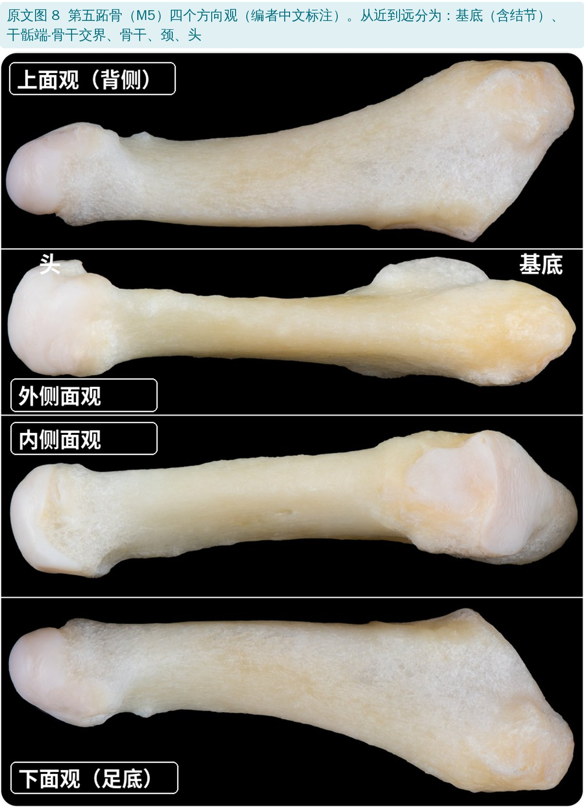
🔖原文图 8 第五跖骨四个方向观（编者中文标注）。从近到远：基底（含结节）、干骺端-骨干交界、骨干、颈、头
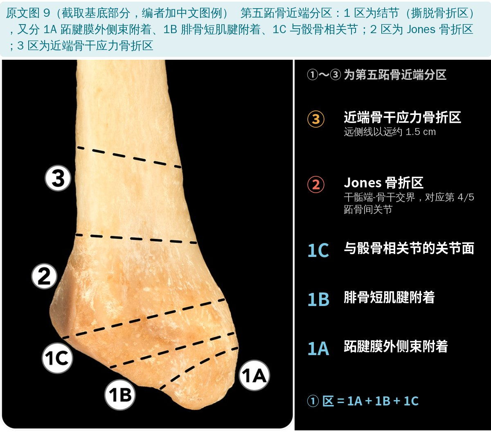
🔖原文图 9（截取基底部分，编者加中文图例） 第五跖骨近端分区
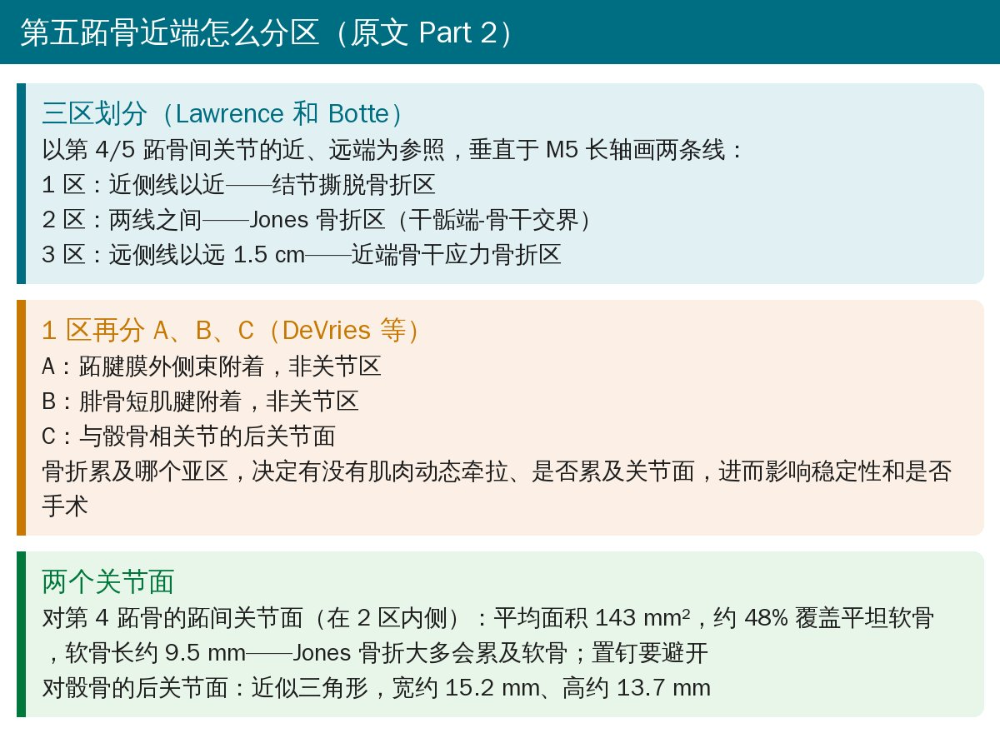
🔖分区与关节面（据原文整理）
| 分区 | 位置 | 对应骨折 | 特点 |
|---|---|---|---|
| 1 区 | 近侧线以近（结节） | 撕脱骨折 | 血供丰富，愈合潜力强；再分 A/B/C |
| 2 区 | 两线之间（干骺端-骨干交界） | Jones 骨折 | 乏血管区；多累及第 4/5 跖间关节软骨 |
| 3 区 | 远侧线以远 1.5 cm | 近端骨干应力骨折 | 乏血管区，易延迟愈合、不愈合 |
分区线：以第 4/5 跖骨间关节的近、远端为参照，垂直于第五跖骨长轴画两条线（Lawrence 和 Botte 分区）。
有两个细节对手术有提示：第 4/5 跖间关节面约 48% 覆盖平坦软骨、软骨长约 9.5 mm，所以Jones 骨折大多会累及关节软骨，置钉要避开这一区域；1 区骨折累及 A、B 还是 C 亚区，决定有没有肌肉动态牵拉、是否累及关节面，进而影响稳定性和是否手术。
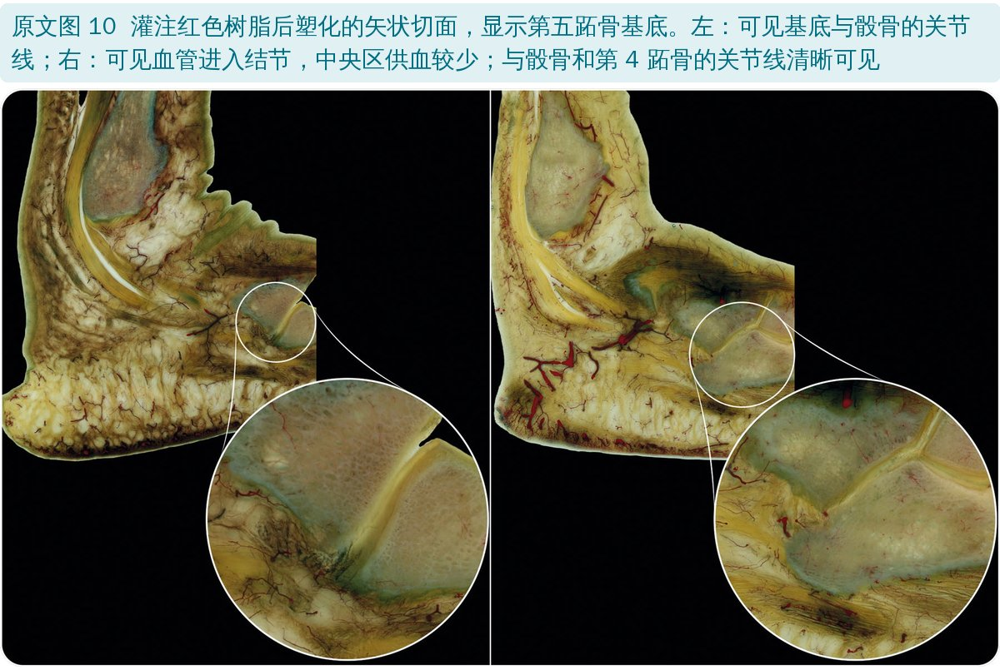
🔖原文图 10 塑化矢状切面。左：基底与骰骨的关节线；右：血管进入结节，中央区供血较少
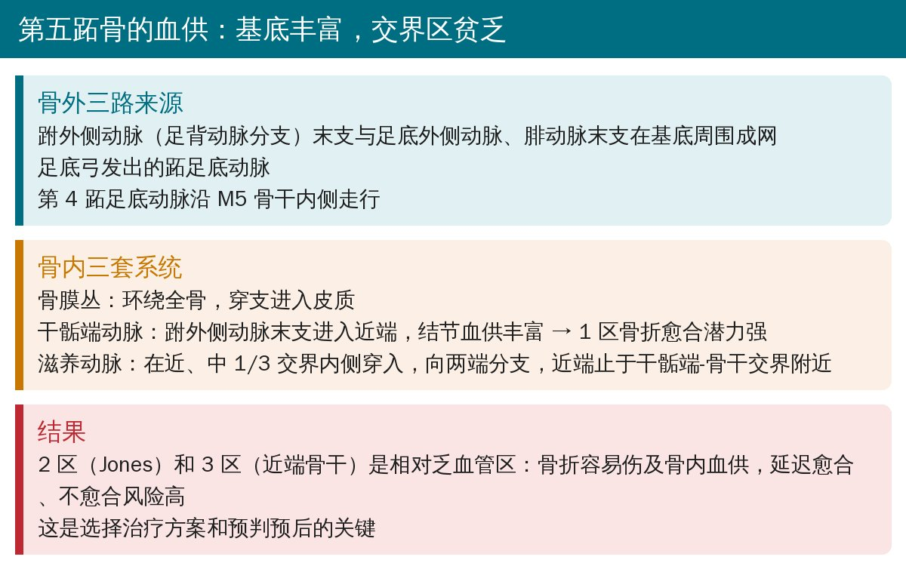
🔖第五跖骨血供（据原文整理）
一句话：结节血供丰富，愈合好；干骺端-骨干交界和近端骨干是相对乏血管区。滋养动脉在近、中 1/3 交界内侧穿入，向近端只走到交界附近，所以这里骨折容易伤及骨内血供——这也是 Jones 骨折“难长”的解剖基础。
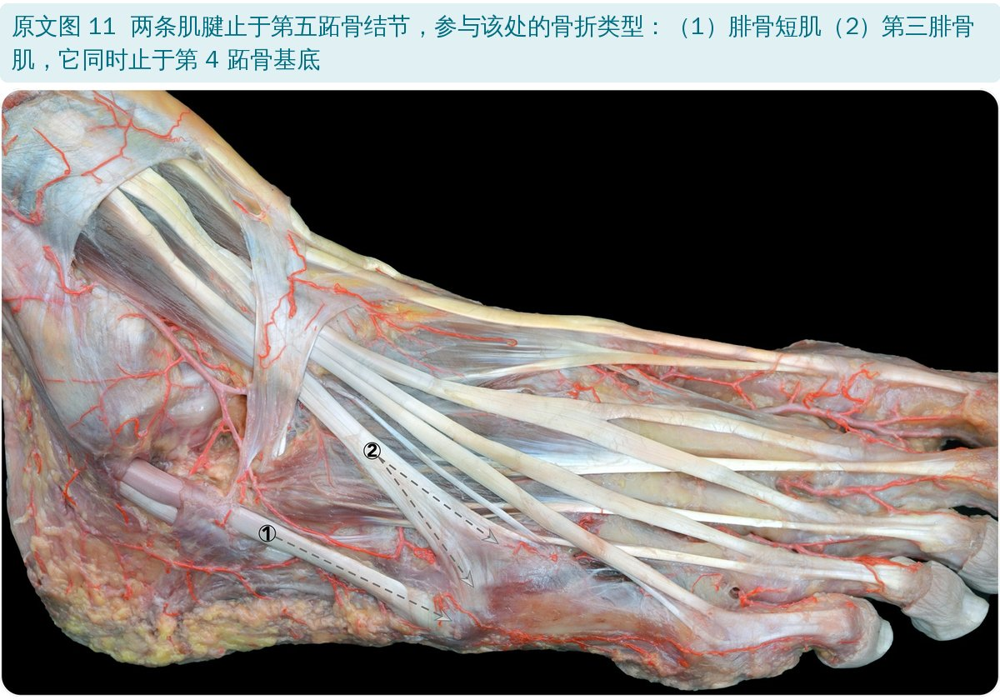
🔖原文图 11 止于第五跖骨结节的两条肌腱：（1）腓骨短肌（2）第三腓骨肌，它同时止于第 4 跖骨基底
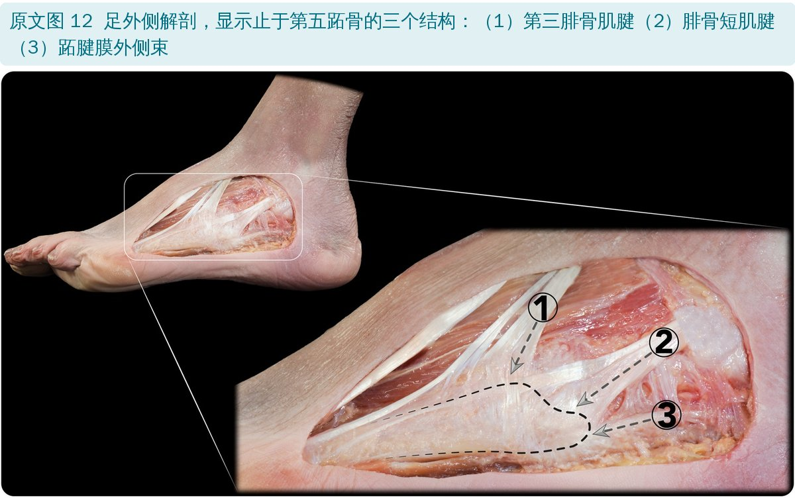
🔖原文图 12 足外侧解剖：（1）第三腓骨肌腱（2）腓骨短肌腱（3）跖腱膜外侧束
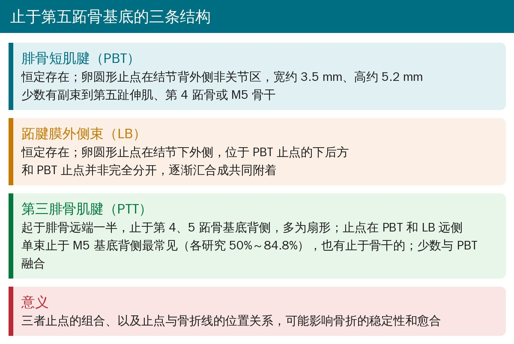
🔖三条附着结构（据原文整理）
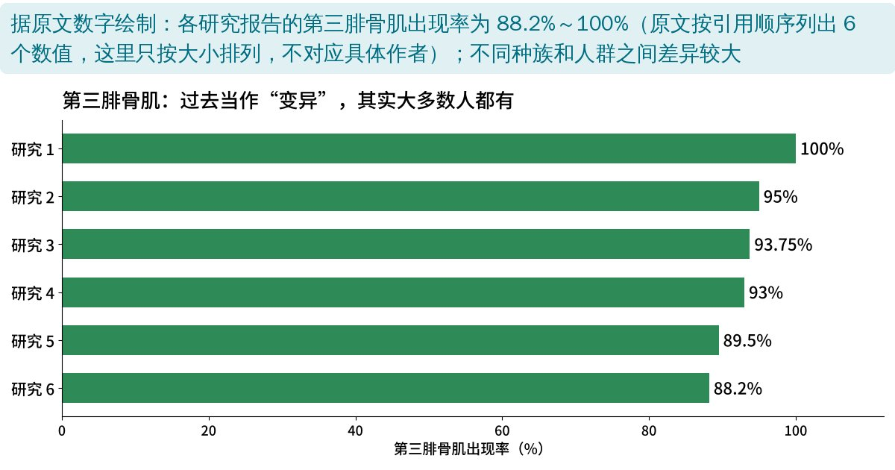
🔖据原文数字绘制：第三腓骨肌在各研究中的出现率为 88.2%～100%，过去当作变异，其实是大多数人都有的恒定肌肉
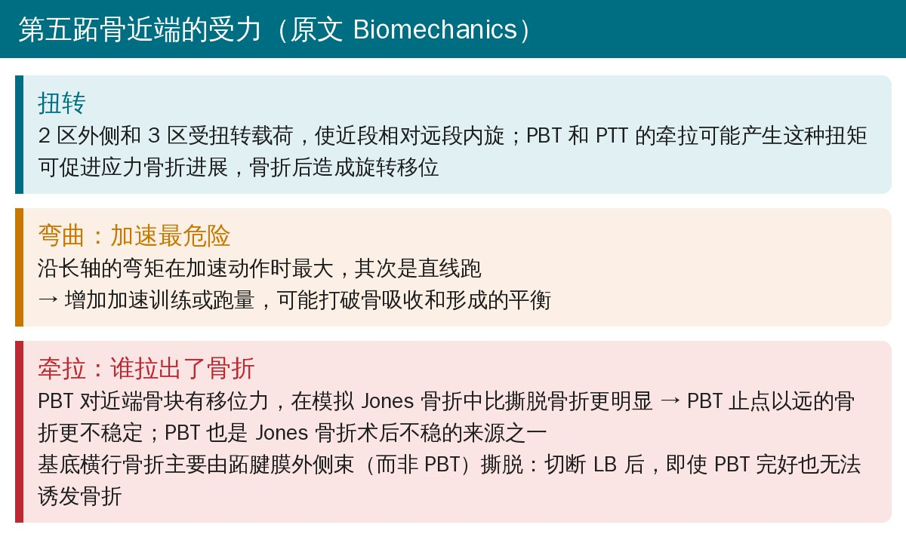
🔖第五跖骨近端的受力（据原文整理）
• 扭转：2 区外侧和 3 区受扭转，近段相对远段内旋，可促进应力骨折进展、骨折后造成旋转移位
• 弯曲：加速动作时弯矩最大，其次是直线跑；增加加速训练或跑量可能打破骨吸收与形成的平衡
• 牵拉：腓骨短肌对近端骨块有移位力，Jones 骨折中更明显，止点以远的骨折更不稳定，也是 Jones 术后不稳的来源之一；基底横行骨折则主要由跖腱膜外侧束撕脱，切断外侧束后即使腓骨短肌完好也无法诱发骨折
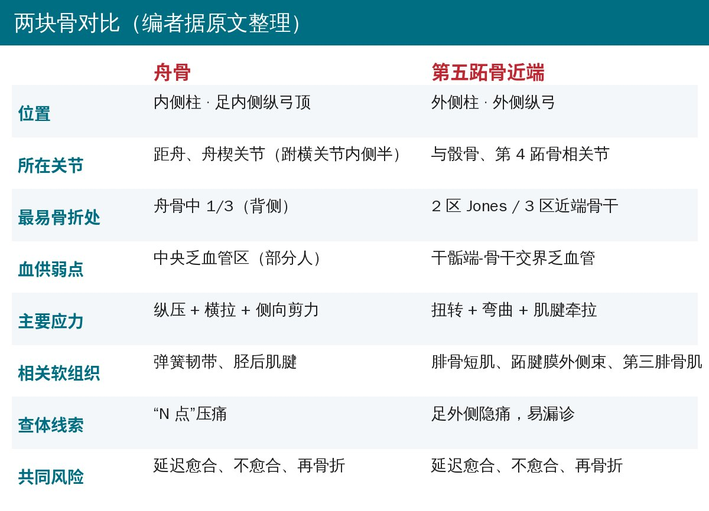
🔖舟骨 vs 第五跖骨近端（编者据原文整理）
• 舟骨部分通篇讲应力骨折，小结却突然改成讨论舟骨缺血性坏死（AVN），说它“不是单纯缺血而是多因素疾病”，前文并未展开
• 第五跖骨部分的数字有重复使用：跖腱膜外侧束和腓骨短肌附着区“距外侧缘”都是 11.5 ± 0.9 mm，非关节区宽度也是这个数；腓骨短肌附着“长度 10.2 ± 2.2 mm”、外侧束“长度 9.5 ± 2.9 mm”与前文“距近端缘”的数值完全相同
• 说第三腓骨肌“只附着在 1 区远侧”，但同一段又说它可止于骨干（45%）或基底与骨干两处
欢迎关注骨科康复小黄公众号，获取更多物理治疗的专业知识！
📄参考文献：
Liu X, Hong CC, Reina F, Carrera A, Alcolea-Madera E, Del Vecchio JJ, Dalmau-Pastor M. Navicular and fifth metatarsal base stress fractures: An illustrated anatomical review. Knee Surg Sports Traumatol Arthrosc. 2026;34:3135–3149. doi:10.1002/ksa.70413
原文为 CC BY 开放获取（© 2026 The Author(s)）。本文为中文解读：原文图 1～12 引自原文，其中图 2、图 8 的方位标签由编者译为中文，图 9 截取基底部分并加中文图例；其余整理卡和数据图由编者根据原文撰写、绘制。